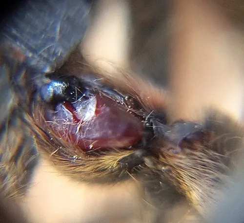

蛛形动物 · 动物界
巴西游走蛛 Phoneutria nigriventer

南美洲东南部的大型游走蛛，白天藏于香蕉叶丛、夜间四处游猎，毒液含强效神经毒素，被咬可致剧痛、流汗与呼吸障碍。
- 分类
- 门节肢动物门纲蛛形纲目蜘蛛目科栉足蛛科属游走蛛属
- 栖息环境
- 热带雨林、香蕉园、棕榈灌丛、木堆与人类居所周边
- 地理分布
- 巴西东南部、阿根廷东北部、乌拉圭与巴拉圭东部
- 保护级别
- IUCN 未评估；为医学上重要的毒蛛，需注意防范
物种志
巴西游走蛛足展可达 13–15 厘米，体长约 3–5 厘米，是体型较大的游走蛛。体色褐灰至深褐，背甲中央有一条浅色纵带，腹部有深色斑纹，步足粗壮且密布绒毛，触肢与螯肢发达。与许多蜘蛛不同，它不结网，而是主动游走捕猎，遇威胁时会抬起前两对步足、露出螯肢示威，这个姿势让它得名“武装蜘蛛”。
它们分布于巴西东南部、阿根廷东北部与乌拉圭的雨林、香蕉园、灌丛与人类居所周边，夜行性，白天藏于香蕉叶腋、棕榈叶丛、木堆与室内角落，夜间在地面与植被间游走捕食昆虫、其他蜘蛛、小型蛙类与蜥蜴。它的毒液含强效神经毒素，可激活钠通道引起剧痛、大量出汗、流涎、血压升高与心律失常，严重时出现呼吸障碍，儿童风险较高。抗毒血清已广泛应用，及时就医预后良好。它常随香蕉运输进入其他地区，故又称香蕉蜘蛛。
形态与习性
- 足展约 13–15 cm，体长 3–5 cm
- 毒性毒液含神经毒素，可致剧痛、大量出汗、心律失常
- 食性昆虫、其他蜘蛛、小型蛙类与蜥蜴
- 活动节律夜行性，白天藏于香蕉叶腋、木堆与室内角落
- 防御姿态抬起前两对步足、露出螯肢，被称为“武装蜘蛛”
- 医学处理有专用抗毒血清，及时就医预后良好
- 扩散途径常随香蕉货物被运往其他地区，故称香蕉蜘蛛
趣味知识
- 它受惊时会高高抬起前腿、亮出螯牙，像端着一把武器的武士。
- 它不结网，整夜在地面和香蕉叶丛间游走搜寻猎物。
- 它的毒液会让人大汗淋漓、心跳紊乱，儿童被咬尤其危险。